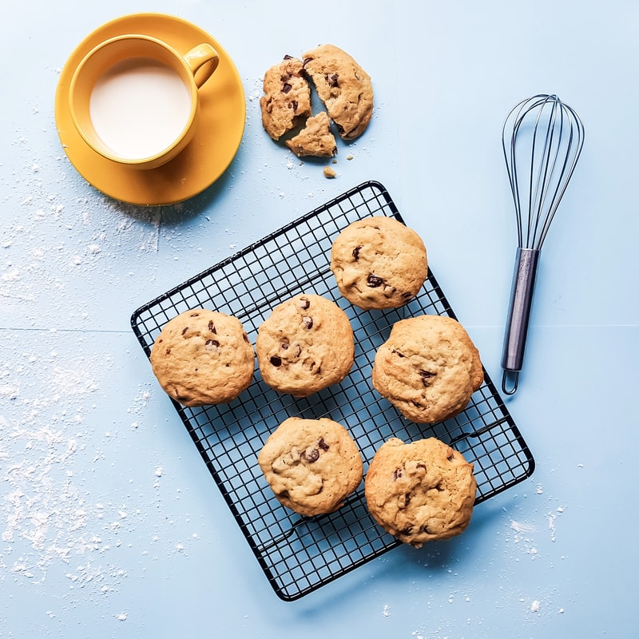
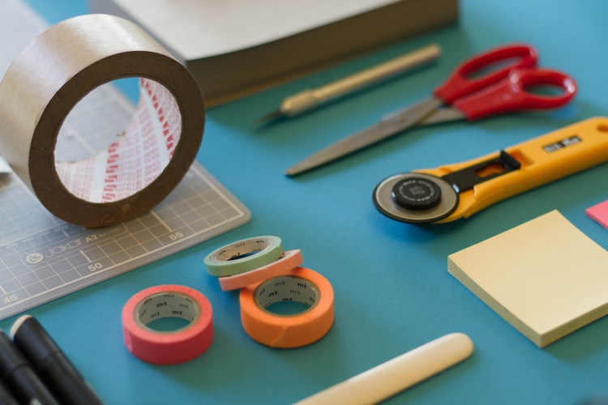

Baking is a very popular way to make food and has been around since 600 BC which were the egyptians who did it with yeast and they also brewed beer with the yeast. There are many ways to bake like inside hot ashes, or on hot stones but the most common way is in the oven. Thier is a wide variety of things you can bake the most common things made by baking are cakes, cookies, and breads which are all very tasty! I myself

Have you ever just done something your self instead of spending money to have it done? Well thats known as Do It Yourself or DIY the more common phrase. DIY is something that any person in the world can do and achive its a basic human thing to do. You can make anything if you put your mind to !!!